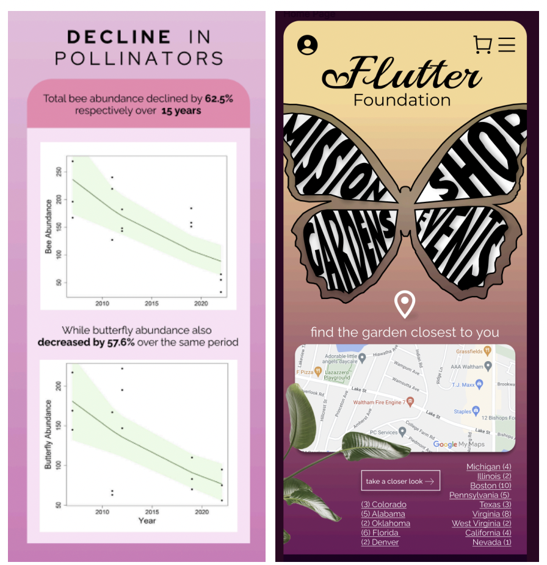
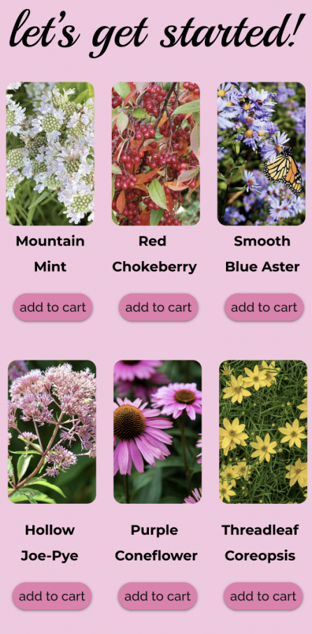

Nonprofit Sustainability Campaign
A multi-part visual communication project where I created a fictional nonprofit and designed a complete sustainability awareness campaign across social media, poster design, infographic storytelling, and mobile web planning.
Overview
I developed a realistic nonprofit concept and built a full awareness campaign around sustainability. The assignment required more than visuals: I had to define the organization mission, identify target audiences, set communication goals, and design assets that stayed clear, ethical, and consistent across multiple mediums.
The outcome was a connected campaign system in Figma that moved from awareness to action while staying visually cohesive and message-driven.
Campaign strategy
- Audience definition: identified demographics, interests, and behavior patterns related to sustainability engagement.
- Objective setting: structured content around awareness, education, and behavior change.
- Message framework: created key messages that balanced emotional storytelling with practical calls to action.
- Brand consistency: maintained a coherent visual language across social, print, and mobile touchpoints.
- Responsible communication: ensured campaign claims and visuals aligned with ethical sustainability messaging.
Design deliverables
The course structure pushed the campaign through three core visual modes:
- Designing with images: social-purpose visual storytelling for Instagram story format, using image-driven communication and minimal text.
- Designing with text and color: a bus stop PR poster using strict constraints (limited colors and type) while maximizing clarity and readability.
- Designing with numbers: an infographic poster that translated data into an actionable narrative with multiple chart types and a clear call to action.



Integrated mobile campaign
In the final phase, I translated the campaign into a three-page mobile website concept focused on event promotion, organization story, and campaign assets. This required planning navigation, hierarchy, and copy flow before visual styling, then developing wireframes that communicated a complete and cohesive campaign story on small screens.
This stage helped me connect strategy and execution: content architecture, wayfinding, and consistency across formats.
Skills & tools
Impact
Delivered a complete multi-channel campaign system designed in Figma — spanning social media assets, a PR poster, an infographic, and a mobile campaign concept. All deliverables were produced ready for stakeholder handoff and real-world implementation.